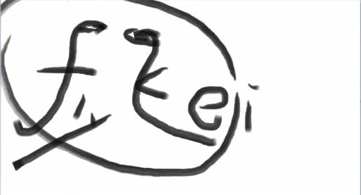
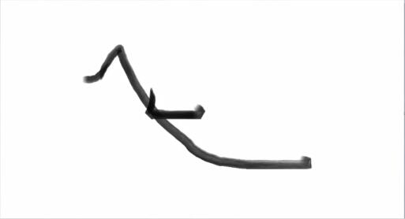

4. D
4.1. 下
down /daʊn/ adv. 在下面；向下，朝下； adj. 不高兴的；情绪低落的； prep. 在下面；向下，朝下； v. 使跌倒，使倒下；
descend /dɪˈsend/ vi. 下降；下去；下来；遗传；屈尊(de向下 + scend上爬 = 下降)
scend /send/ n. 波浪的推动力；船的上升运动 vi. 船上升；左右摇晃; 爬
ascend /əˈsend/ vi. 上升；登高；追溯 vt. 攀登，上升(a一再 + scend爬 = 上升)
4.1. 灭
die /daɪ/ vi. 死亡；凋零；熄灭 vt. 死，死于……
destroy /dɪˈstrɔɪ/ vt. 毁灭; 破坏；消灭；毁坏
destructive /dɪˈstrʌktɪv/ adj. 破坏的；毁灭性的；有害的，消极的
constructive /kənˈstrʌktɪv/ adj. 建设性的；推定的；构造上的；有助益的
4.1. 加强
define /dɪˈfaɪn/ vt. 定义；使明确；规定(fin末端, 鱼鳍)
final /ˈfaɪnl/ adj. 最终的；决定性的；不可更改的 n. 决赛；期末考试；当日报纸的末版(fin末端)
semi-final/ˌsemi ˈfaɪnl/n. 半决赛，准决赛
finite /ˈfaɪnaɪt/ adj. 有限的；限定的
infinite /ˈɪnfɪnət/ adj. 无限的，无穷的；无数的；极大的
definite /ˈdefɪnət/ adj. 确定的; 一定的；确切的
indefinite/ɪnˈdefɪnət/ adj. 不确定的；无限的；模糊的
5. E
5.1. 眼睛
eye /aɪ/ n. 眼睛；视力；眼光；见解，观点 vt. 注视，看
See eye to eye with sb. 同意某人的观点. agree with sb.
The food agrees with me. 这个食物适合我.(agree: 同意, 适合, 有利于) The weather agrees with me.
5.2. 向外(ex-)
elegant /ˈelɪɡənt/ adj. 高雅的，优雅的；讲究的；简炼的；简洁的(e向外 + leg大腿 + ant蚂蚁 = 向外露出大腿的蚂蚁 = 优雅)
elect /ɪˈlekt/ v. 选举；选择，决定（做某事）； adj. 卓越的；蒙上帝挑选（而得救）的；当选（而尚未就职的）
select /sɪˈlekt/ v. 选择；选定；选取 adj. 精选的 n. 被挑选者
exit /ˈeksɪt/ n. 出口，通道；退场 vi. 退出；离去(ex朝外 + it走)
entrance/ˈentrəns/ n. 入口；进入 vt. 使出神，使入迷
entrance exam(s) /ˈentrəns ɪɡˈzæm/ 入学考试（entrance exam的复数）
entrance examination /ˈentrəns ɪɡˌzæmɪˈneɪʃn/ 入学考试
expose /ɪkˈspəʊz/ vt. 揭露, 暴露，揭发；使曝光；显示 n.(令人震惊或保密之事的)揭穿，揭露(ex朝外 + pose=put放置, 朝外放置, 朝外摆pose)
threat /θret/ n. 威胁，恐吓；凶兆
pose a threat to sth. 对sth构成威胁；形成一种威胁(pose摆姿势 + a + 恐吓)
post a threat against 对...构成威胁
impose /ɪmˈpəʊz/ vt. 强加；征税；以…欺骗 vi. 利用；欺骗；施加影响(in里 + pose=put放置)
Parents shouldn't impose their ideas on their children. 父母不应该把观点强加给孩子.
6. F
6.1. 飞
fly /flaɪ/ vi. 飞；驾驶飞机；飘扬 vt. 飞行；飞越；使飘扬 n. 飞行；苍蝇；两翼昆虫
6.2. 波折, 波动, 折
fluctuate /ˈflʌktʃueɪt/ vi. 波动; 起伏；涨落；动摇 vt. 使波动；使动摇(fluct- 折, 波浪)
fluctuation /ˌflʌktʃuˈeɪʃn/ n. 起伏，波动
flict /flɪkt/ n. 折, 打击, 冲击, 攻打, 撞
fluent /ˈfluːənt/ adj. 流畅的，流利的；液态的；畅流的
conflict /ˈkɒnflɪkt/ n. 冲突，矛盾；斗争；争执 vi. 冲突，抵触；争执；战斗(con一起+flict = 一起折)
afflict /əˈflɪkt/ vt. 折磨；使痛苦；使苦恼(双写辅音f + 元音a = 加强折 = 折磨)
inflict /ɪnˈflɪkt/ vt. 造成；使遭受（损伤、痛苦等）；给予（打击等）(in向内+flict折 = 向内折 = 造成, 使遭受)
flexible /ˈfleksəbl/ adj. 灵活的；柔韧的；易弯曲的(flict->flex, 能折的)
inflexible /ɪnˈfleksəbl/ adj. 僵化的, 顽固的；不可弯曲的；不屈挠的；不能转变的
rigid /ˈrɪdʒɪd/ adj. 严格的；僵硬的，死板的；坚硬的；精确的
6.3. 带来(carry, fer-飞的东西)
infer /ɪnˈfɜː(r)/ vt. 推断；推论 vi. 推断；作出推论
inferior /ɪnˈfɪəriə(r)/ adj. 低级的; 次的; 差的；自卑的；下级的，下等的 n. 下级；次品(in总在推论上级)
superior /suːˈpɪəriə(r)/ adj. 上级的; 高级的；优秀的，出众的；高傲的 n. 上级，长官；优胜者，高手；长者
A is inferior/superior to B. A比B低级/高级.
refer /rɪˈfɜː(r)/ vi. 参考；涉及；提到；查阅 vt. 涉及；委托；归诸于；使…求助于
reference /ˈrefrəns/ n. 参考，参照；涉及，提及；参考书目；介绍信；证明书 vi/vt. 引用
reference book /ˈrefrəns bʊk/ 参考书；工具书
transfer /trænsˈfɜː(r)/ v. 转让；转接；移交；转移(地方); 换乘; 转存, 转录; 调动(工作); 传染, 传播; 把(钱)转到另一账户, 机构上
n.(地点的)转移;(工作的)调动;已调动的人或东西;权力的移交;运动员转会;(财产的)转让;数据的拷贝
transfer student 转学生；转校生
transport/ˈtrænspɔːt/ n. 运输; 交通；运输机；狂喜；流放犯 vt. 运输; 交通；流放；使狂喜(port港口, 作为词根=搬运)
public transport n. 公共交通；公共交通设施
7. G(g-c-k-ct-s-z-w-saw-q通假)
7.1. 割
agony /ˈæɡəni/ n. 苦恼；极大的痛苦；临死的挣扎(agony爱过你)
anguish /ˈæŋɡwɪʃ/ n. 痛苦；苦恼 vt. 使极度痛苦 vi. 感到极度的痛苦